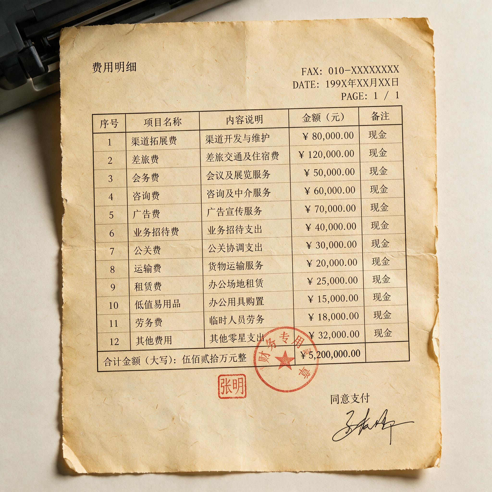

第 4 章
渠道否决心智
那份费用明细表是夹在季度经营分析会材料第五页和第六页之间的一页传真纸。抬头是某饮料公司市场部，下面盖着财务专用章，日期栏填着1999年10月14日。表上的项目分列两栏，左栏是费用科

传真纸上的市场费用明细表
AI 生成插图，非史实影像。
目，右栏是金额，单位万元，精确到小数点后一位。
市场费用合计八百二十三点六万元。其中，中央电视台广告投放一百二十万元，经销商季度返利二百五十万元，重点卖场进场费一百八十万元，二批商搭赠奖励九十万元，终端小店陈列费一百一十万元，促销员劳务及管理费六十万元。另外还有一项“其他”十三点六万元，没有明细。合计数字下方有一行手写钢笔字:“本月广告费占比百分之十四点六，较上月下降三个点。渠道费用占比百分之七十六点四。”
字迹向右上方倾斜，末了一个句号戳破了纸面，留下一个深色墨点。这张表不指向某桩骇人的商业失败。它记录的是一家正常运转的企业在正常月份里的正常支出结构。
一家自认为正在建设品牌的饮料公司，把钱花了出去，其中超过四分之三没有进入任何可被消费者识别为“品牌”的媒介空间。它付给了经销商的仓库和账款账期，付给了卖场的进门资格和货架位置，付给了二批商多拿几十箱货的临时冲动，付给了小店主把产品摆在收银台旁还是塞进角落的日常决策。这些支出并不直接创造认知。但它们决定了认知能否在消费者抬手可及的地方变成一罐饮料。这就是渠道的成本，也是渠道的权力。---
1999年末的中国快消品市场，没有任何一家公司能够绕开这道成本。生产的门槛在九十年代中后期已经大幅下降。一条国产饮料灌装线，几十名工人，一间租来的厂房，就可以让一个小企业把产品从工厂运到批发市场的大门口。但把产品从批发市场大门口推进省代仓库、市级二批、县城批发户、街边小店和新兴大型卖场的收款台，需要的是另一套资源。
这套资源不掌握在品牌经理手中，也不掌握在广告公司手中。它掌握在数以千计的独立经销商和数以百万计的终端店主手中。每一层手掌摊开，都要接住一笔钱，然后才允许产品继续向前流动。
这不是人为刁难的结果。九十年代中国商业基础设施的破碎，使得渠道天然以多层形式存在。计划经济时期的国营糖酒公司体系在八十年代末到九十年代中期经历了一轮私有化、承包制和破产清算。旧有的统一调拨网络瓦解之后，填充其空缺的并不是一两家全国性零售巨头。
沃尔玛直到1996年才在深圳开出第一家购物广场，家乐福进入中国的时间稍早，但门店覆盖在世纪之交仍仅限于少数省会城市。全国范围内承担快消品分销的，是大量区域性私营批发商。他们熟悉本地工商、税务和客情关系，拥有仓库和送货卡车，也承担了品牌方无法直接覆盖的最后一公里。
一家省级经销商通常下辖两三个地级市，向下对接七八个甚至十几个二批商。二批商再对接着几百家小店的进货需求。每一级都有独立的资金成本、库存风险和对下游的信用判断。
这种结构下，品牌方对货物流向的控制力非常有限。一箱饮料从省代仓库出库之后，接下来经过谁的手、以什么价格成交、最终摆在什么位置，品牌方总部能看到的信息往往滞后两到四周。滞后本身就意味着风险。
当企业试图在全国范围执行统一的品牌定位，它必须依赖一套并不统一、并不实时、并不服从品牌意志的分销机器。这套机器的运行原则是现金流和周转。经销商不关心“年轻活力”四个字能否进入消费者的长期记忆。
他们关心的是这一百箱货要在多少天内卖完，卖完之后能不能拿到返点，下一批货的搭赠政策是否比上一批更划算。如果卖得慢，仓库每天的租金和管理成本就在侵蚀利润。如果卖得快但利润太薄，经销商也没有动力继续把产品作为主推品。品牌方想要的是价格稳定和终端形象一致。经销商想要的是上量。两者的冲突不是道德问题，而是激励结构问题。---
这一冲突最直接地体现在返利政策上。九十年代末到两千年代初，快消品企业的经销商返利通常采取阶梯制。一份典型的渠道促销政策通知，返利门槛拆成了月度、季度、年度三档。月度回款满三十万元，返百分之二；满五十万元，返百分之三点五；满八十万元，返百分之五。
季度另有累计奖励，但必须在季度末最后五个工作日前完成全部回款，否则当季累计清零。年度合同还有一项“忠诚奖励”，金额按全年实际回款额的百分之一到百分之三浮动，考核条件包括不得经营三家以上同类竞品、不得跨区域销售、不得低于指导价供货。
这份通知随后用三页纸列出了搭赠条件。订货满一百箱赠五箱，满三百箱赠十八箱，满五百箱赠三十五箱。赠品货值计入当月回款，计入返利门槛，但不计入跨区域销售统计。
促销员费用方面，品牌方承担基本工资，经销商承担提成和交通补贴，但终端卖场的促销员如果缺勤被查，品牌方在每个检查周期内有权扣减该经销商当季返利的零点二个百分点。
条款下方有一行小字:“以上政策最终解释权归公司营销中心所有。”没有日期落款，只有营销中心总经理的签名。签名模糊，笔画连成一片，显示签署速度很快。
这种政策设计从总部层面看是理性的。它试图用复杂的阶梯和条件把经销商的利益与品牌方的出货目标捆绑在一起，同时用考核条款约束经销商低价倾销和跨区窜货的冲动。
但在执行层面，每一档返利门槛都成为经销商计算行为的节点。三十万元和五十万元之间的返利差，意味着多压二十万元货可以多拿数千元返点。如果这些额外压的货无法在本地市场正常消化，经销商有两个选择：一是降价向终端铺货，二是向其他区域市场低价抛售。两种选择都会破坏品牌方苦心维持的价格体系。
经销商当然知道这一点。但季度末的返利表摆在面前时，压货的短期收益是确定的，而价格体系受损的长期代价由品牌方承担，分散在漫长的时间线和广阔的地理空间里。
同一个季度里，华东某省一个年回款额在三百万元左右的一级经销商正在做他的计算。
他的仓库面积约八百平方米，月租金加管理费合计一万两千元，雇佣五名送货工和两名业务员，每月人工成本约两万八千元。品牌方给他的月度回款任务是二十五万元，季度累计七十五万元。
这个季度到第二个月末，他已经完成了五十二万元。离季度结束还有三十天，他需要再完成二十三万元才能拿到季度累计返点。
如果完成，季度返利约为一万八千元，加上月度返利累计约两万六千元，合计四万四千元。这相当于他一个半月的人员工资。但如果完不成，季度累计返点归零，他只能拿到已经到手的两笔月度返利，加起来不到一万两千元。两万多元的差距，足以驱动行为。
他给下级二批商打了电话，提出如果本月能多提两百箱，他可以在正常搭赠之外再私下补贴每箱一元。这些私下补贴不经过公司账目，不走合同流程。二批商同意多提一百五十箱。他又向品牌方区域经理申请了一批“新品试销支持”，拿到额外的五十箱赠品。加起来，本月经他库房流出的产品比正常销量多了近四成。这些多出的货去了哪里？
一部分压进了终端小店的库存，店主被说服“旺季快到了，多备点货不吃亏”。另一部分流向了两百公里外另一个地级市的批发市场。那个市场不属于他的授权区域，但那里的批发户愿意以低于当地供货价百分之八的价格接货。他每箱亏一点五元，但返利和搭赠算下来，总体仍然有赚。这是窜货。合同上写着禁止，每一个经销商开会时都会被提醒。但当返利门槛的数字足够具体，而“禁止”的后果又足够模糊时，选择就变成了算术题。---
终端小店主面对的是另一套算术题。九十年代末，城市街边杂货店和农村小卖部的货架空间并不充裕。一个饮料柜通常只能容纳三到五个品牌的十二到二十个单品。哪个产品占据视线平齐的位置，哪个产品被塞在柜门下层，直接决定动销速度。
一家位于中部地级市老城区的杂货店，店面约三十平方米，饮料柜是品牌方三年前配发的单门展示柜，制冷时有低沉的嗡鸣声。柜子分四层，最上层视线平齐的位置最值钱，店主称之为“黄金层”。黄金层摆什么，取决于两个因素：一是哪个品牌这个月给的陈列费高，二是哪个品牌卖得快。两个因素权重差不多。
陈列费通常以月为单位支付。这个月，A品牌给三十元，要求产品摆在第二层以上，标签朝外，不少于六个排面。B品牌给五十元，要求黄金层独占四个排面，附带条件是店主不能在同一层摆放A品牌的产品。店主收了B品牌的五十元，把A品牌挪到了第三层。
A品牌的业务员下周来巡店，发现陈列不合规，拍了照片回去，当月的陈列费可能被扣掉。店主不在乎。
五十元比三十元多，这个算术不需要太多考虑。大型卖场的算术题则高出一个数量级。一家省会城市重点卖场的饮料类进场费，单品类可以高达三到八万元，条码费每个单品两千到五千元，节庆堆头费根据位置和面积从一万元到三万元不等。卖场采购的考核指标不是品牌形象，是坪效和后台费用收入。后台费用，即进场费、条码费、促销管理费等非销售性收入，在某些卖场的利润结构中占比超过四成。采购的KPI要求他每年将后台费用提高百分之十五到二十。
品牌方销售经理来谈判，采购的底牌是：不付进场费，货进不来；付了进场费，位置不一定好；想要好位置，再加堆头费。
品牌定位在这里不是购买决策的依据。它是谈判桌上偶尔被提及的一句开场白。销售经理说，我们这个品牌定位是年轻时尚，目标消费者是十八到二十五岁的城市青年，和你们的客群高度吻合。采购听着，点点头，然后问：那你们准备付多少？
当品牌方试图在这些终端保持价格一致，以维护所谓“心智中的价格锚”，渠道各方却在不同的激励机制下不断把实际成交价向下拉。价格倒挂于是成为一种周期性出现的现象。
某北方城市的区域价格表记录了一次典型倒挂。该品牌五百毫升瓶装饮品的出厂价为每瓶二点一元，经销商供货价为二点三五元，终端建议零售价为三元。但当地批发市场实际出现了一批以每瓶一点九元向外抛售的货源。
这批货的来源被追溯到周边省份的一个经销商，该经销商为了冲季度返利门槛，额外提了价值六十万元的货，随后以低于进货价的价格向相邻区域的批发市场甩货。批发市场以二点一元左右的价格向小店供货。小店的进货成本低于当地经销商的正常供货价，因此当地经销商整月销量几乎停滞，仓库里堆着按正常价格进的一百多箱产品无人提货。品牌方市场督察人员在月底盘点时发现，该市终端陈列中的产品有近四成因低于规定价格展示，无法获得陈列费补贴。这个区域的价格体系在不到六周的时间内被局部击穿。
要修复它，需要品牌方派出督察人员逐店核对条码、追溯货源、约谈经销商、发出处罚通知，整个过程耗时两到三个月。而在这两到三个月里，下一个季度的返利门槛又到了。
此类事件的处理通常在总部销售例会上以简报形式出现。一份会议纪要记录了一次讨论。市场部提出“严禁跨区窜货，维护品牌价格形象”，建议对涉事经销商处以当季返利全部取消的处罚。
销售部提出反对意见，理由是“该经销商本季度回款占大区总额百分之三十二，如果强硬处罚，可能引发下季度回款断崖式下跌，影响全公司回款计划”。财务部提醒，已计提的该经销商返利中有一笔四十二万元尚未支付，如果单方面停付，根据合同条款可能引发法律纠纷。品牌部问，如果暂时不停付，有没有其他办法约束窜货行为。销售部回答，可以发一封警告信，承诺下个季度如果不再出现类似情况，本次不做追罚。
三方意见写在同一页纸上，没有得出明确结论。下次会议记录中，该问题被归入“渠道秩序整顿后续事项”一栏。再下次会议，这栏被缩短为“渠道秩序：持续跟进”。此后再未单独列出处理结果。记录只到这一步。---
销售经理处在所有这些力量的交汇点。总部要求他完成回款指标，维护价格体系，同时还要执行品牌部下达的终端形象标准。
省代通知他月底前必须再提一批货，否则拿不到季度返点，而省代仓库里已经堆着上个月尚未消化完毕的产品。二批商告诉他，邻省低价货已经流进市场，本地价格没法维持。小店老板指着柜台上竞品的陈列费补贴说，你的产品如果不再加点费用，位置就得让出来。卖场采购发来传真，要求确认下一年度进场费是否按百分之二十的幅度上调。
他站在这些要求中间，手里掌握的资源只有公司给他的费用权限和一批即将到达仓库的产品。他每个月的可支配费用包括：终端陈列费预算三万元，促销员补贴预算八千元，给二批商的临时搭赠额度两千箱，以及一笔需要区域总经理特批的“市场应急费”五万元。这些数字是他的全部武器。
月初，他做了一份费用分配表。三万元陈列费，要覆盖辖区内两百多个终端网点，平均每个点不到一百五十元。其中三个重点卖场各需要三千到五千元堆头费，一下子占掉近一半。
剩下的钱，只够在五十家位置较好的小店各摆上一个标准陈列面。还有一百多家小店，他只能寄望于业务员每周巡店时口头维持客情关系。
月中，省代库存压力增大，要求他配合做一轮促销。方案是买十箱送一箱，赠品由品牌方承担，但需要在他自己的搭赠额度内消化。他算了一下，按这条方案走，本月的搭赠额度会用掉七成。一旦用掉七成，月底如果出现临时铺货需求，他就只剩下三成可以调配。
他没有拒绝省代。在这个体系里，省代的配合度直接决定他月度回款任务能否完成。拒绝省代，意味着下个月省代可能把资源倾斜给其他品牌，他的回款数字立刻会出问题。
月末，回款还差六万元才能触发公司的月度考核合格线。他给三个二批商分别打了电话，提出如果当天打款，他可以额外多给十五箱搭赠。有一个二批商答应了，打了四万元。剩下两万元缺口，他自己找了一家关系较熟的终端连锁店，以“节前备货”为由说服对方提前进了一批货，承诺如果卖不动，下个月可以调换。月底最后一天，回款数字达标。
他填完月度汇报表，在“终端陈列达标率”一栏写了个估计数。“价格体系维护情况”一栏空着没填。他知道填什么都不会准确。价格每天都在变，在不同的终端，不同的二批手里，按不同的搭赠和返利折算成不同的实际成交价。总部的价格表上写的是建议零售价三元，但在他的辖区里，这瓶饮料的实际成交价从两元到两点八元都有。他无法统一这些价格，也没有资源去统一。
理论上，他是品牌在区域市场的执行者。实际上，他每天处理的是渠道各方的现金预期和库存压力。品牌心智，这个总部在年度营销大会上反复强调的词，在他每天的日程里找不到对应的动作。
他的动作是砍掉一笔促销员加班费，同意给某个二批商追加二十箱搭赠，再向总部写邮件申请特批一次经销商返利提前兑付。至于消费者能否因为这个品牌而产生稳定认知，他无法直接知道，也没有人要求他必须知道。---
消费者看到的一端更加简单。电视上出现一支广告，一个年轻人在运动后打开一瓶饮料，画面明亮，音乐轻快。广告末尾打出品牌标识和一句广告语。
走进街边小店，柜台最显眼的地方摆着另一个品牌，因为那个品牌这个月给店主的陈列费多二十元。走到饮料柜前，发现电视里的品牌被放在底层，标签朝内，旁边贴着褪色的价签。拿起一瓶走到收银台，想用三元钱结账，发现旁边一个顾客买三瓶一共七元，因为小店老板想清掉上周从批发市场低价进来的那批货。同一个品牌，在同一个城市，三条街外的另一家小店价格是两块八，再走五百米的超市里贴着“会员价两块六”。
没有人会觉得这是渠道对品牌心智的否决。他们只觉得价格有点乱，货架有点乱，广告看过之后也不太想得起来。
他们不会知道：那个摆在底层的产品，是因为这个月的陈列费被竞品压了一头；那个“买三瓶七元”的低价，是因为三百公里外一个经销商为了冲返利门槛而甩货；那支制作精良的广告片，是用占市场总费用不到百分之十五的预算拍出来、播出来的。
消费者看到的只是终端呈现的结果。而这个结果，由渠道的无数个局部计算叠加而成，与品牌方在广告片中精心构建的那个“心智位置”几乎没有关系。
这个链条的每一个节点都有人在做局部最优选择。经销商算的是返利和周转，二批商算的是价差和风险，小店老板算的是陈列费和动销，卖场采购算的是后台费用和坪效。品牌方总部的品牌经理算的是广告投放覆盖率和品牌知名度追踪调研。每一个计算在各自位置上都是合理的。
但把它们拼在一起，就构成了一台机器。这台机器不识别“心智占有率”这个指标。它只识别现金流、库存、费用和回款。
任何品牌意图进入这台机器，都必须被翻译成渠道各方能够计算的数字。翻译过程本身会改变品牌意图的内容。所谓“抢占心智第一”，进入渠道之后变成“本月陈列费用增加百分之十”、“经销商返利放宽两档”、“对窜货行为暂缓追偿”和“卖场堆头费追加五万元”。品牌心智不是被推翻了，而是被稀释到无法辨认其原始形状。
定位理论在那几年传入中国的完整版本中，反复强调一个前提：企业应当在消费者心智中建立一个清晰、独特、稳定的位置。这个前提隐含着一个假设：企业可以通过某种传播与行动的组合，对消费者认知施加持续影响，而这种影响能够以相对可控的成本实现。
但在渠道控制触达权的阶段，这个假设遭遇了结构性否决。消费者最后看到什么价格、什么位置、什么促销，不是由品牌的长期定位决定，而是由渠道各方在短期激励下的行为叠加决定。企业无法直接触达消费者，任何触达都必须经过多层独立主体的利益过滤。每过滤一次，信息的强度和价格信号的一致性就损耗一次。最终抵达消费者时，这个品牌可能已经在货架上，但那个“位置”已经和广告片里描述的不是同一样东西。
这不是说定位理论本身存在根本缺陷，假设了一个不存在的静态心智市场。它的问题在于，当它进入中国市场时，碰到的第一道墙不是消费者认知的竞争，而是触达消费者之前必须穿越的渠道结构。
心智并非不可被占据。但在占据心智之前，企业必须先占据货架。而占据货架的资源消耗，已经在起点上耗尽了占据心智所需的时间和金钱。---
这不是说所有品牌建设都注定无效。而是说，在那个特定的渠道结构中，心智建设的投资回报率被渠道费用排挤到一个极低水平。当一家公司每个月把七成以上的市场费用付给经销商返利、卖场进场费、终端陈列和促销员管理，它就没有足够资源去支付高质量的媒介投放、消费者调研和终端形象维护。
即使有足够的广告预算，广告所创造的短期需求预期也必须通过渠道变现。渠道在变现环节设置的成本和扭曲，反向决定了广告投入的实际产出。品牌溢价在市场终端被拉低，又进一步削弱了企业维持高额媒介投放的能力。这是一条向下的回路。渠道费用居高不下，品牌溢价难以维持，媒介投资被迫收缩，心智建设更加乏力。许多企业不是没有听说过定位理论，而是在这条回路中没有余力执行它。
二000年前后，一批企业开始意识到，与其投资一个无法控制的“心智”，不如把钱花在购买渠道效率上。渠道效率是可以被计算的：投下去多少进场费，换回多少货架位置；增加多少陈列费，带动多少终端动销；
放宽多少返利门槛，刺激多少经销商回款。这些数字周期短、归属清楚、可由销售部门在月度报表中验证。相比之下，品牌知名度的变化需要季度甚至半年以上的追踪数据，归因困难，且极易被渠道终端的复杂变化干扰。
企业高层在年度预算讨论中的选择往往没有悬念：渠道费用先保证，广告预算作为弹性项。某企业内部的年度预算讨论记录反映了这种排序。销售副总提出，下一年度经销商返利预算需要增加百分之二十，理由是竞品正在放宽返利门槛，如果不跟进，可能流失核心经销商。市场副总提出，品牌广告投放需要从今年的八百万增加到一千两百万，以应对新进入品类的国际品牌。总经理问财务总监，明年市场费用总盘子能增加多少。财务总监回答，最多增加百分之八，约五百万元。
总经理算了算。经销商返利增加百分之二十，大约需要三百五十万元。卖场进场费按合同涨幅，至少增加一百万元。两项加在一起，四百五十万元已经用掉了增量的九成。剩下五十万元，做不了什么像样的媒介投放。
他对市场副总说，广告预算维持今年水平不变，先从渠道效率上挖掘潜力。这是一个清醒的计算。
不是品牌不重要，而是渠道费用是刚性支出，不付就会立刻丢失货架、丢失回款、丢失市场份额。而广告费用减少的后果，不会在当月体现在报表上。两者在时间压力上的不对称，决定了资源的流向。定位理论要求的长期、一致、稳定的投入，在这样的资源排序中自然让位于渠道的现实压力。
这构成了定位理论在中国第一次被系统性改写的实际环境。后来所谓的“品类占位”，在很大程度上不是营销理念的自觉升级，而是渠道资源的理性分配结果。企业无法占有消费者的心智，因为通向心智的道路被渠道控制着，而渠道的过路费已经耗尽了大部分资源。
于是至少要先占住货架。占住货架，意味着在渠道的博弈中争取到最低限度的可见性。至于心智是否真的被建立起来，已经是第二层问题。这个逻辑不是某个人的选择，而是结构压力下的系统行为。---
深夜，某饮品公司华东某大区的销售经理回到区域中心仓。仓门半开，白炽灯从顶部照下来，灯管一端有些闪烁。仓库里堆着一百三十箱临期产品，保质期还剩下十八天。
这些货是月初总部压下来的促销装，按计划应该在月底前铺到三个地级市的重点卖场。结果一个地级市的经销商临时拒绝接货，理由是仓库里还有上月的货没卖完。两个重点卖场要求追加堆头费才肯安排促销装陈列位置，追加金额加起来要六千元。他的费用额度已经用完了。铺货计划只完成了四成。剩下六成滞留在库。
省代那边已经明确表示，这批货如果退回，只能按破损品处理，每箱折价不足出厂价的三成。损失算下来超过两万元，按照公司规定，销售经理个人要承担百分之三十。送货司机下午来过，把可以调往邻县的四十五箱拉走。剩下的八十五箱不知道怎么办。
他打电话给一个关系较熟的二批商，问能不能低价接走一部分。对方说可以，但价格只能按出厂价的六折算，而且不能走对公账目。他没答应。
六折的价格，意味着这批货的亏损比他个人承担百分之三十还大，而且不走对公账目意味着他之后无法解释这批货的去向。墙壁高处贴着一张去年的年度营销主题海报，上面印着“抢占心智第一”六个字，旁边是公司的品牌标识和一句广告语。海报边角卷起，蒙着一层仓库里的灰。销售经理没有抬头看它。
他蹲下来，拿起一箱产品看看生产日期，又放回原位。灯光在纸箱表面投下一片淡黄色。外面传来货车倒车的声音，随即又远去了。
这些货曾经被计划为“心智建设”的一部分。市场部当时说，促销装的设计要突出品牌调性，包装要用统一的视觉识别系统，终端的陈列要和广告片保持一致性。但现在它们只是一堆即将过期的库存。它们能不能在十八天内被卖掉，取决于能否找到一个愿意接货的渠道，取决于那个渠道的出价，取决于出价是否低到他愿意承担亏损的程度。
心智在这里已经完全不在计算范围之内。计算范围内只有保质期、折价比例、个人承担的亏损额度，以及下个月的销售指标。那台渠道机器在夜里也没有停止转动。
终端小店里，另一品牌的产品被店主移到冰箱正中间的第三层，因为这个月它的陈列费比上个月涨了十元。省代仓库里，又一批为了冲返利门槛而提前拉走的货正在点验，送货单上的价格是按合同供货价开的，但实际结算价要等季度末返利到账之后才知道。某个二批市场里，凌晨会有几辆小货车从邻省开进来，卸下价格更低的产品，批发户们会围上去看货、问价、讨价还价。品牌口号贴在仓库墙上，货堆在仓库地上，渠道在两者之间运转。四者的关系不必再说明什么。